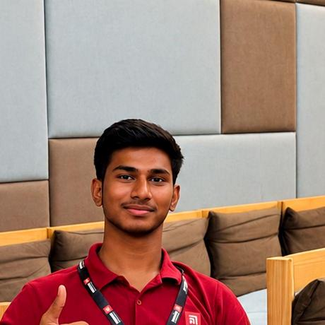

Move your cursor over the photo — it tilts in 3D with a holographic shine, then settles back flat.

Desktop: hover & move your cursor over the photo · Touch: it floats gently on its own.
Preview only — pick one and it will replace the About photo.